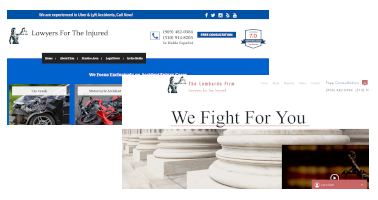

Over the course of three weeks, I tested the layouts and experience of two different versions of the Lombardo law site in California. In the discovery phase, I uncovered issues with site navigation and decided to focus on both layout and navigation. I conducted my research to determine the best way to provide potential users with an easier navigation system and more pleasing design system.
My Responsibilities
Interviewing
Creating Surveys
Heuristic Evaluation
Affinity Diagram
Accessibility Testing
A&B Testing
Demographic Research
User Testing
Survey Analysis
Color Psychology Analysis
Key Goals
Determine the best site in terms of user needs
Research how to make the site more accessible
Understand users and their pain points of current sites
Scope and Timeline
3 week timeframe
Individual Project
Deliverables were defined by stakeholders

User Research
Defining the user
This project was done remotely from a different state, California, so I had to do some digging to determine the user of this website. I conducted demographic research as well as conducting stakeholder interviews to get their business statistics. I discovered that the main users of the site were white males with an income of 100k - 150k.
A&B Testing
The stakeholders had one site that was live and one that they wanted to replace the live site with. They wanted to focus primarily on which site was better. I decided to focus on A/B testing. I conducted 5 interviews, local to Austin, to determine the main pain points before moving on to interviewing users local to California. The main pain points showed that one site had a bad navigation experience while the other had a bad design experience. I passed my findings to the design team and recommended finding a way to combine the two sites.
Accessibility Testing
Testing for accessibility was a new challenge for me. The site was an injury law firm so I knew that accessibility would be important. Using a web plugin, I was able to check for color blindness, text, and contrast regulations. Based on the results, it was easy to see which site had the best color scheme and easy to read font. Going through both sites using keyboard navigation proved that the navigation functions were very flawed and tended to skip important navigational areas.
Heuristic Evaluation
While finishing the surveys and interviews, I began the heuristic evaluation. I checked for broken links and missing/incorrect information, as well as the accessibility results.
Affinity Diagram
After the interviews and surveys were done, I decided to create an affinity diagram map to determine the main pain points. In doing so, I discovered that the biggest problems were in the navigation of the site and the design. Each site presented with one of these issues, so I determined that a combination of the two sites would be the best idea.
Deliverables
Because this was a contract position, my assignment was to turn in just the deliverables presented above. The company’s design team then took over and continued the work using my suggestions. This project was completed very recently, so the live site has not changed.
Final Thoughts
This project was very research-heavy and I loved that it gave me a way to focus on this more in-depth and more general experience working in a different state. I liked being able to dive headfirst into the project and learn everything about the company on the go. I would have loved to be included in the design process and look forward to seeing how the company incorporates my research.